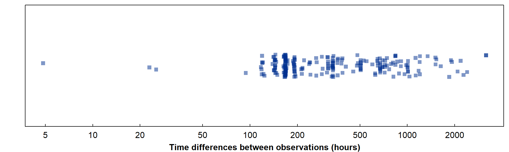
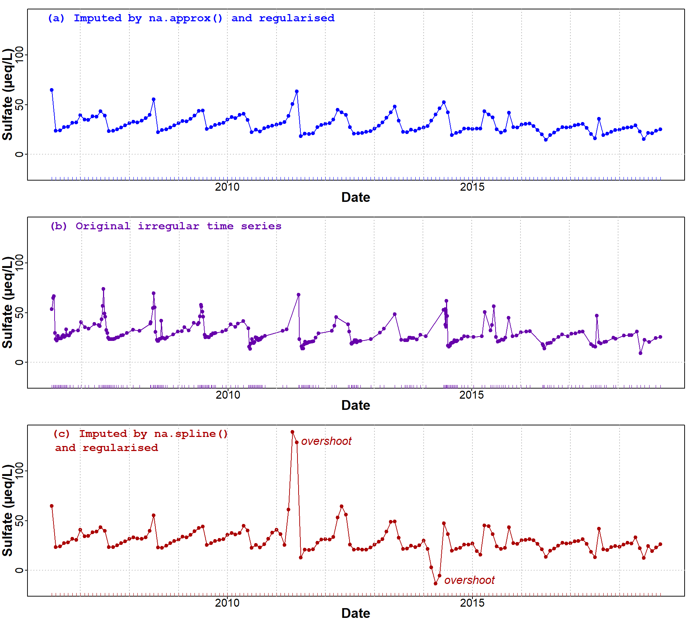
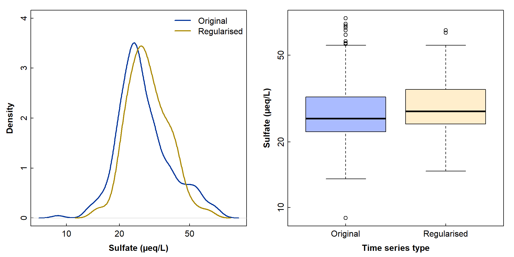
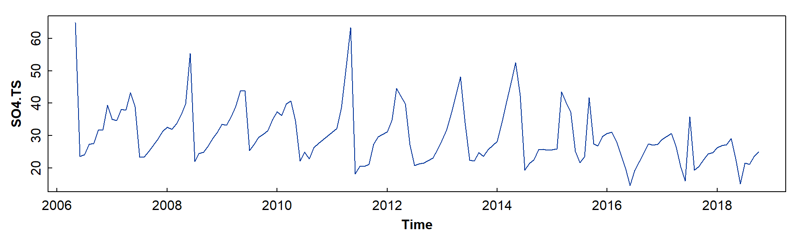
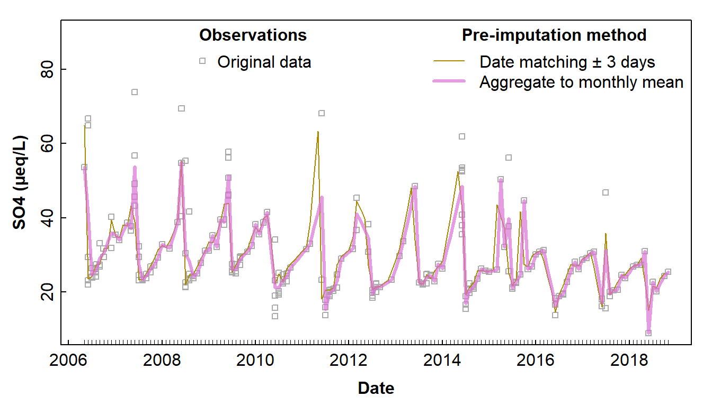
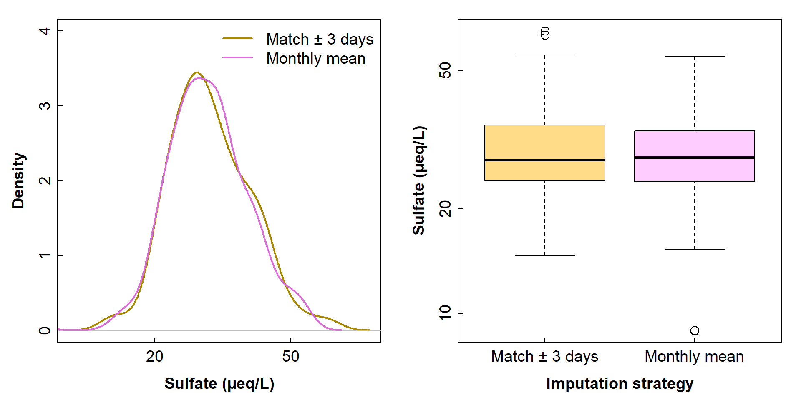

Return to main time series page
Many of the R functions we need for time series regularisation are in base-R, but we will also need
# Load the packages we need
library(zoo) # for basic irregular time series functions
library(Kendall) # for trend analysis with Mann-Kendall test
library(trend) # for trend analysis using the Sen slope
library(viridis) # accessible colour palettesSometimes it's necessary to regularise a time series, for instance:
Regularisation means that the dates/times in the time series have the same spacing, but with an irregular time series the spacing can be uneven, with any choice of evenly spaced dates resulting in missing observations on a regular time scale. We therefore also need to impute or interpolate the missing values. Many of the more powerful imputation methods such as Kalman filtering are not really valid for irregular time series, so interpolation methods such as linear or spline interpolation need to be used.
I think the requirements for successful time series regularisation are:
The procedures coded below are deigned to fulfil these requirements. We're using an irregular time series of groundwater sulfate data from Niwot Ridge in Colorado, USA (Williams, 2019) to illustrate.
To get started we need to read the sulfate data:
git <- "https://raw.githubusercontent.com/Ratey-AtUWA/Learn-R-web/main/"
SO4 <- read.csv(paste0(git,"Niwot-Saddle-SO4.csv"))
head(SO4)
# Colorado USA is in the Mountain Standard Time (MST) time zone
SO4.zoo <- read.zoo(SO4, format = "%Y-%m-%d %H:%M", tz = "MST")## Date SO4
## 1 2006-05-22 12:00 53.61143
## 2 2006-06-01 9:35 64.89586
## 3 2006-06-08 12:25 66.76966
## 4 2006-06-15 8:45 29.46026
## 5 2006-06-22 8:40 23.19345
## 6 2006-06-28 8:08 22.00671par(mar=c(3,3,1,1)-0.5, mgp=c(1.5,0.3,0), tcl=0.25, font.lab=2)
SO4diffs <- as.vector(diff(index(SO4.zoo)))
stripchart(SO4diffs, method="jitter", pch=15, col="#00309080", log="x",
xlab="Time differences between observations (hours)")
Figure 1: Time differences between observations for the Niwot Ridge groundwater sulfate dataset.
It's clear from Figure 1 that the original data have a very wide range of time differences between observations, from about 5 hours (0.2 days) to 3169 hours (132.1 days), with a median time difference of about 12 days.
For simplicity we'll try to regularise to monthly dates.
Also, since we have time differences of < 24 hours, we are likely
to have at least one duplicate date (likely with a different time), so
we'll combine any duplicates by taking the mean value with the
aggregate() function first:
l1 <- length(SO4.zoo)
# note use of as.Date() to round date-time to just the day with no h:m:s
SO4.zoo <- aggregate(SO4.zoo,as.Date(index(SO4.zoo)),mean)
l2 <- length(SO4.zoo)
cat("Before aggregation we had",l1,"observations; after aggregation we have",l2,"observations.")## Before aggregation we had 231 observations; after aggregation we have 230 observations.We use unique(...) to ensure there are not duplicate
dates.
We will allow actual observations to be within a threshold (e.g. 1 day) of the regular series dates. This means we an maximise the use of real data, and limit the number of imputed values.
Allowing a difference of 3 days seems reasonable, as we want monthly intervals, and 3 days is about 10% of a month. So any actual observations will always be from a date within 10% of the desired (regularised) date.
Some code for finding closest dates:
# Define reference vector and target vector
rv <- as.numeric(newdates)
tv <- as.numeric(as.Date(index(SO4.zoo)))
# function to find closest values
closest <- sapply(rv, function(x) which.min(abs(x-tv)))
# assign to an object and display them
maxGap <- 3
matches <- data.frame(regDates=as.Date(rv),
closest,
actualDates=as.Date(tv[closest]))
matches$Gap. <- abs(matches$regDates-matches$actualDates)
matches$`repl?` <- matches$Gap. <= maxGap
head(matches, 10)## regDates closest actualDates Gap. repl?
## 1 2006-06-01 2 2006-06-01 0 days TRUE
## 2 2006-07-01 6 2006-06-28 3 days TRUE
## 3 2006-08-01 11 2006-08-02 1 days TRUE
## 4 2006-09-01 15 2006-08-31 1 days TRUE
## 5 2006-10-01 18 2006-09-28 3 days TRUE
## 6 2006-11-01 20 2006-10-30 2 days TRUE
## 7 2006-12-01 21 2006-12-07 6 days FALSE
## 8 2007-01-01 22 2006-12-27 5 days FALSE
## 9 2007-02-01 23 2007-01-26 6 days FALSE
## 10 2007-03-01 24 2007-02-23 6 days FALSEIf the largest allowed gap is 3 days, there are 42 of 150 regularised dates which can be replaced using the 230 actual dates.
In contrast, if the dates are only allowed to match exactly, there are only 6 of 150 regularised dates which can be replaced using the actual dates.
SO4.df <- data.frame(Date=as.Date(index(SO4.zoo)), SO4=coredata(SO4.zoo))
if(maxGap==0){
monthday1 <- unique(c(as.Date(index(SO4.zoo)),newdates))
forinterp <- data.frame(Date=monthday1,
SO4=as.numeric(rep(NA, length(monthday1)))
)[order(monthday1),]
forinterp$SO4[forinterp$Date %in% SO4.df$Date] <- SO4.df$SO4
} else {
# define which dates are "close enough"
keeporig <- matches[matches$`repl?`=="TRUE","actualDates"]
# add sulfate concentrations to `matches` data frame
matches$SO4 <- rep(NA, nrow(matches))
matches$SO4[matches$`repl?`] <-
SO4.df[SO4.df$Date %in% matches$actualDates[matches$`repl?`],"SO4"]
# define kept dates, so we can also define non-kept e.g. SO4.df[-kept,]
kept <- which(SO4.df$Date %in% keeporig)
# then combine them
matchreg <- matches[,c("regDates","SO4")]; colnames(matchreg) <- colnames(SO4.df)
forinterp <- rbind(matchreg, SO4.df[-kept,])
forinterp <- forinterp[order(forinterp$Date),]
str(forinterp)
}We use the na.approx() function from the
zoo package (the related na.spline() function
gives similar results, but is prone to "overshooting", i.e.
giving values which are unrealistically high or low where there are
large gaps between observations. It's not ideal to try
interpolation where we don't have much real data!).
SO4.reg.zoo <- monthImpute[which(index(monthImpute) %in% newdates)]
SO4.spline.zoo <- monthSpline[which(index(monthSpline) %in% newdates)]Finally we have a regularised time series which is as close as we can get it to the original irregular time series. We can compare the datasets in a plot:
yearmarkers <- seq(as.Date("2007-01-01"), as.Date("2018-01-01"), by="year")
par(mfrow=c(3,1), mar=c(3,3,1,1), mgp=c(1.5,0.3,0), tcl=-0.25, font.lab=2,
cex.lab=1.75, cex.axis=1.4)
palette(c("black", "blue", "#a00","#60a","#bbb"))
plot(SO4.reg.zoo, type="o", pch=19, col=2, xlab="Date", ylab="Sulfate (µeq/L)", ylim=c(-20,140))
abline(v=yearmarkers, col=5, lty=3) ; abline(h=0, col=5, lty=3)
rug(index(SO4.reg.zoo), 0.02, col=2)
mtext("(a) Imputed by na.approx() and regularised",3,-1.5, adj=0.05, col=2, font=11)
plot(SO4.zoo, type="o", pch=19, col=4,
xlab="Date", ylab="Sulfate (µeq/L)", ylim=c(-20,140))
abline(v=yearmarkers, col=5, lty=3) ; abline(h=0, col=5, lty=3)
rug(index(SO4.zoo), 0.02, col=4)
mtext("(b) Original irregular time series",3,-1.5, adj=0.05, col=4, font=11)
plot(SO4.spline.zoo, type="o", pch=19, col=3, xlab="Date", ylab="Sulfate (µeq/L)", ylim=c(-20,140))
abline(v=yearmarkers, col=5, lty=3) ; abline(h=0, col=5, lty=3)
rug(index(SO4.spline.zoo), 0.02, col=3)
mtext("(c) Imputed by na.spline()\nand regularised",3,-3, adj=0.05, col=3, font=11)
text(as.Date(c("2011-06-01","2014-05-01")),c(130,-10), labels=rep("overshoot",2),
col=3, cex=1.5, pos=4, font=3)
Figure 2: Comparison of regularised time series (a) with original irregular time series (b) for ground water sulfate monitoring data from Niwot Ridge. A time series regularised with the help of spline interpolation is also shown in sub-plot (c). Year markers (vertical lines) have been added to ease comparisons; inward x-axis ticks show dates of observations.
The results of our regularisation look acceptable where we have
imputed values using linear interpolation (na.approx()).
With spline interpolation (na.spline()), the imputed
negative sulfate concentration (-13.4 mg/L) in Sep-Oct 2014, and
probably the large imputed spike in sulfate concentration (139.5 mg/L)
in Sep-Oct 2011 (Figure 2(c)), do not really look reasonable. We could
avoid negative concentrations by log-transforming concentrations before
imputing the NA values, but the large positive spike is
harder to avoid.
Any interpolation method is trying to simulate what happened during these large gaps between observations; in the absence of enough data, it can't do that, but just constructs a line or curve that joins the endpoints. Since a spline uses a series of cubic functions, its behaviour can be much more extreme than a linear interpolation.
How did we go against our requirements for successful time series regularisation?
Yes... we made a compromise by allowing dates within 3 days to substitute for the regularised dates, but this seems worth it as it allowed us to retain more actual data.
We can assess the trend quantitatively with statistical tests like the Mann-Kendall test and Sen's slope. Let's try:
##
## Mann-Kendall trend test
##
## data: coredata(SO4.zoo)
## z = -4.5857, n = 230, p-value = 4.525e-06
## alternative hypothesis: true S is not equal to 0
## sample estimates:
## S varS tau
## -5.350000e+03 1.360623e+06 -2.032250e-01##
## Mann-Kendall trend test
##
## data: coredata(SO4.reg.zoo)
## z = -4.1697, n = 150, p-value = 3.05e-05
## alternative hypothesis: true S is not equal to 0
## sample estimates:
## S varS tau
## -2.567000e+03 3.787083e+05 -2.297092e-01##
## Sen's slope
##
## data: coredata(SO4.zoo)
## z = -4.5857, n = 230, p-value = 4.525e-06
## alternative hypothesis: true z is not equal to 0
## 95 percent confidence interval:
## -0.04708517 -0.01902515
## sample estimates:
## Sen's slope
## -0.0327171##
## Sen's slope
##
## data: coredata(SO4.reg.zoo)
## z = -4.1697, n = 150, p-value = 3.05e-05
## alternative hypothesis: true z is not equal to 0
## 95 percent confidence interval:
## -0.08370479 -0.03072832
## sample estimates:
## Sen's slope
## -0.05735351So, with the Niwot Ridge sulfate data, regularisation has preserved a significant decreasing trend in groundwater sulfate concentrations.
and
Visual comparison of sub-plots (a) and (b) in Figure 2 suggests that this is the case.
Direct comparisons are problematic, since the dates are different.
An alternative approach would just be to compare the distributions:
par(mfrow=c(1,2), mar=c(3,3,1,1), mgp=c(1.6,0.2,0), tcl=0.25, font.lab=2)
plot(density(log10(SO4.zoo)), col = "#039", lwd = 2, main="",
xlab="Sulfate (µeq/L)", xaxt="n", ylim=c(0,4))
lines(density(log10(SO4.reg.zoo)), col = "#a80", lwd = 2)
legend("topright", bty="n", c("Original", "Regularised"),
col=c("#039","#a80"), lwd = 2)
axis(1, at=log10(c(5,10,20,50)), labels=c(5,10,20,50))
bxpdata <- rbind(data.frame(ID=rep("Original",length(SO4.zoo)),
SO4=coredata(SO4.zoo)),
data.frame(ID=rep("Regularised",length(SO4.reg.zoo)),
SO4=coredata(SO4.reg.zoo)))
bxpdata$ID <- as.factor(bxpdata$ID)
with(bxpdata, boxplot(log10(SO4) ~ ID, yaxt="n", col=c("#abf","#fec"),
xlab="Time series type", ylab="Sulfate (µeq/L)"))
axis(2, at=log10(c(5,10,20,50)), labels=c(5,10,20,50))
Figure 3: Comparisons of the distributions of sulfate concentrations in the original and regularised/imputed time series, using density curves (left) and box plots (right).
Based on Figure 3, the time series are not identical; we can not expect that, given that there are numerous interpolated sulfate concentrations in the regularised series.
The regularisation reduces the incidence of potential outliers in sulfate concentration, which could be beneficial.
💡 Do you think the differences are large enough to change any scientific conclusions we might make?
We could now also make a regular time series object (class is
ts, not zoo; Figure 3):
## Jan Feb Mar Apr May Jun Jul Aug Sep Oct Nov Dec
## 2006 64.90 23.65 24.13 27.31 27.59 31.70 31.85 39.42
## 2007 35.08 34.68 38.07 37.90 43.22 38.96 23.37 23.48 25.21 27.10 29.05 31.38
## 2008 32.64 32.01 33.68 36.38 39.80 55.38 22.06 24.55 24.93 26.86 29.12 31.13
## 2009 33.52 33.28 35.84 39.05 43.74 43.91 25.49 27.32 29.55 30.40 31.58 34.96
## 2010 37.40 36.22 39.81 40.72 34.58 22.23 24.90 22.86 26.31 27.65 28.75 29.90
## 2011 31.04 32.21 38.65 50.75 63.26 18.22 20.59 20.49 21.13 27.41 29.62 30.42
## 2012 31.23 34.80 44.59 42.23 39.80 27.19 20.81 21.28 21.60 22.40 23.17 25.74
## 2013 28.66 31.89 36.84 42.38 48.10 33.96 22.47 22.16 24.75 23.65 25.68 26.90
## 2014 28.27 33.91 40.16 46.21 52.46 42.38 19.35 21.39 22.66 25.68 25.82 25.59
## 2015 25.67 25.92 43.47 40.19 37.21 25.23 21.69 23.48 41.74 27.45 26.85 29.79
## 2016 30.63 31.08 28.38 24.30 20.09 14.69 19.31 21.95 24.72 27.46 27.08 27.30
## 2017 28.94 29.73 30.66 26.65 20.49 16.08 35.79 19.39 20.58 22.66 24.39 24.73
## 2018 26.26 27.02 27.27 29.15 22.85 15.11 21.62 21.13 23.68 25.04
Figure 4: Regularised time series of ground water sulfate monitoring data from Niwot Ridge plotted as an R (i.e. regular) time series object.
SO4month <- SO4
# make any date in a month the 15th of that month
SO4month$Month <- as.Date(paste0(substr(SO4month$Date,1,7),"-15"))
# reduce to the mean value each month
aggBymonth <- aggregate(SO4month, list(Month=SO4month[,3]), FUN=mean)[,c(1,3)]
# say what happened
cat("Aggregation by month gives", nrow(aggBymonth),
"monthly observations, from an original irregular time series with",
nrow(SO4), "unevenly-spaced observations.")Aggregation by month gives 121 monthly observations, from an original irregular time series with 231 unevenly-spaced observations.
# make complete monthly series
allMonths <- seq(aggBymonth$Month[1],aggBymonth$Month[nrow(aggBymonth)],
by="month")
# take the roll call
missed <- which(allMonths %in% aggBymonth$Month == FALSE)
present <- which(allMonths %in% aggBymonth$Month == TRUE)
# make data frame to hold monthly data (including NAs)
withGaps <- data.frame(Month=allMonths,
SO4=rep(NA,length(allMonths)))
# fill in the aggregated monthly data
withGaps$SO4[present] <- aggBymonth$SO4
# convert to zoo object
withGaps <- read.zoo(withGaps, index.column=1, format="%Y-%m-%d", tz="MST")
# talk about it
cat("Aggregation by month gives", length(present), "of", length(allMonths),
"possible monthly observations. This leaves",length(missed),
"months to be imputed. Aggregation is itself a form of imputation!")Aggregation by month gives 121 of 151 possible monthly observations. This leaves 30 months to be imputed. Aggregation is itself a form of imputation!
# do the imputation with linear interpolation
SO4imputed <- na.approx(withGaps)
# make imputed data into a base-R time series object
SO4.TS2 <- ts(SO4imputed, freq=12, start=c(2006,5))
summary(SO4.TS2); cat("\nThe monthly data now have",sum(is.na(SO4imputed)),
"missing values")## Min. 1st Qu. Median Mean 3rd Qu. Max.
## 8.953 23.990 28.107 29.599 33.535 54.888##
## The monthly data now have 0 missing values# compare the two imputation strategies with a plot
par(mar=c(3,3,1,1), mgp=c(1.6,0.2,0), tcl=0.25, font.lab=2)
# first plot the original irrgular time series
# we need to match the way monthly dates are stored in base-R time series objects
plot(as.numeric(substr(SO4$Date,1,4))+((as.numeric(substr(SO4$Date,6,7))-1)/12),
SO4$SO4, col="#aaa", pch=0, cex=0.7, ylim=c(9,90),
xlab="Date", ylab="SO4 (µeq/L)")
# add the first imputed time series
lines(SO4.TS, type="l", col="#a80", lwd=1)
# add the second imputed time series
lines(SO4.TS2, col="#DA70D6b0", lwd=3)
rug(as.Date(index(SO4.TS2)),0.015) # show regular dates on x-axis
legend("topleft", inset=c(0.2,0), bty="n", pch=0, col="#aaa", pt.cex=0.7,
legend=c("Original data"), title="Observations", title.font=2)
legend("topright", bty="n", title="Pre-imputation method", title.font=2,
legend=c("Date matching ± 3 days", "Aggregate to monthly mean"),
lwd=c(1,3), col=c("#a80","#DA70D6b0"))
Figure 5: Comparison of regularised time series using different strategies for imputation of values which are not on regular dates or missing. Inward x-axis ticks show dates of observations.
par(mfrow=c(1,2), mar=c(3,3,1,1), mgp=c(1.6,0.2,0), tcl=0.25, font.lab=2,cex=1.2)
plot(density(log10(SO4.reg.zoo)), col = "#a80", lwd = 2, main="",
xlab="Sulfate (µeq/L)", xaxt="n", ylim=c(0,4))
lines(density(log10(SO4imputed)), col = "orchid", lwd = 2)
legend("topright", bty="n", c("Match ± 3 days", "Monthly mean"),
col=c("#a80","orchid"), lwd = 2)
axis(1, at=log10(c(5,10,20,50)), labels=c(5,10,20,50))
bxpdata <- rbind(data.frame(ID=rep("Match ± 3 days",length(SO4.reg.zoo)),
SO4=coredata(SO4.reg.zoo), check.names=F),
data.frame(ID=rep("Monthly mean",length(SO4imputed)),
SO4=coredata(SO4imputed), check.names=F))
bxpdata$ID <- as.factor(bxpdata$ID)
with(bxpdata, boxplot(log10(SO4) ~ ID, yaxt="n", col=c("#fd8","#fcf"),
xlab="Imputation strategy", ylab="Sulfate (µeq/L)"))
axis(2, at=log10(c(5,10,20,50)), labels=c(5,10,20,50))
Figure 6: Comparisons of the distributions of sulfate concentrations in the two variants of regularised/imputed time series, using density curves (left) and box plots (right).
💡 Which imputation do you think is best? Why?
💡 Would you predict that imputation strategy would make a difference to time series trends or forecasts?
The original code for Appendix 1 was used to start a discussion with MS Copilot. Some improvements to the code and text were made as a result of that discussion, but all the code and text was written by the author who identifies as a human.
R Core Team (2026). R: A language and environment
for statistical computing. R Foundation for Statistical Computing,
Vienna, Austria. URL https://www.R-project.org/.
Williams, Mark (2019). Groundwater well chemistry data for Niwot Saddle, C1, and Martinelli, 2005 – ongoing. ver 2. Environmental Data Initiative. https://doi.org/10.6073/pasta/00dddc061dd0b97d28f3c375b5f6ada2 (Accessed 2026-09-30).
Zeileis A, Grothendieck G (2005). zoo: S3 Infrastructure
for Regular and Irregular Time Series. Journal of Statistical
Software, 14(6), 1-27. doi:10.18637/jss.v014.i06 (Accessed 2026-09-30).
🔚
CC-BY-SA • All content by Ratey-AtUWA. My employer does not necessarily know about or endorse the content of this website.
Created with rmarkdown in RStudio. Currently using the free yeti theme from Bootswatch.